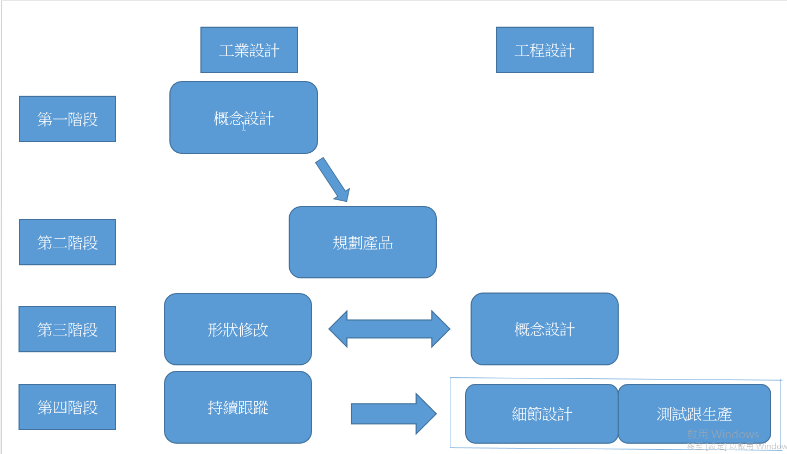
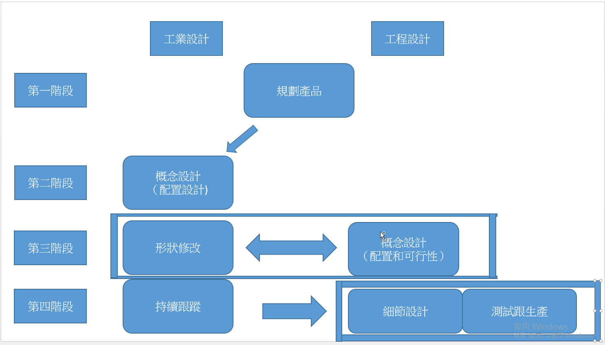
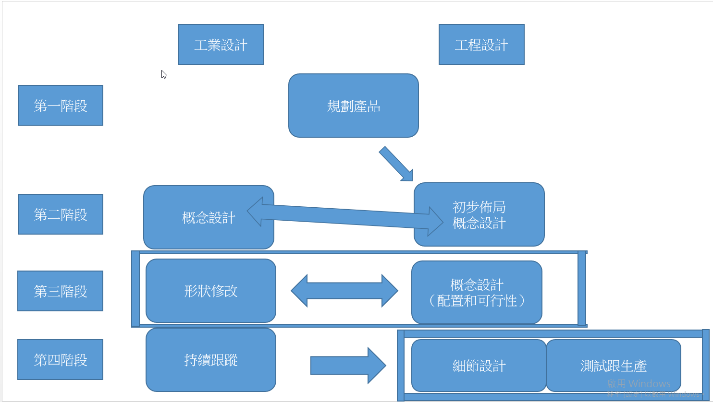
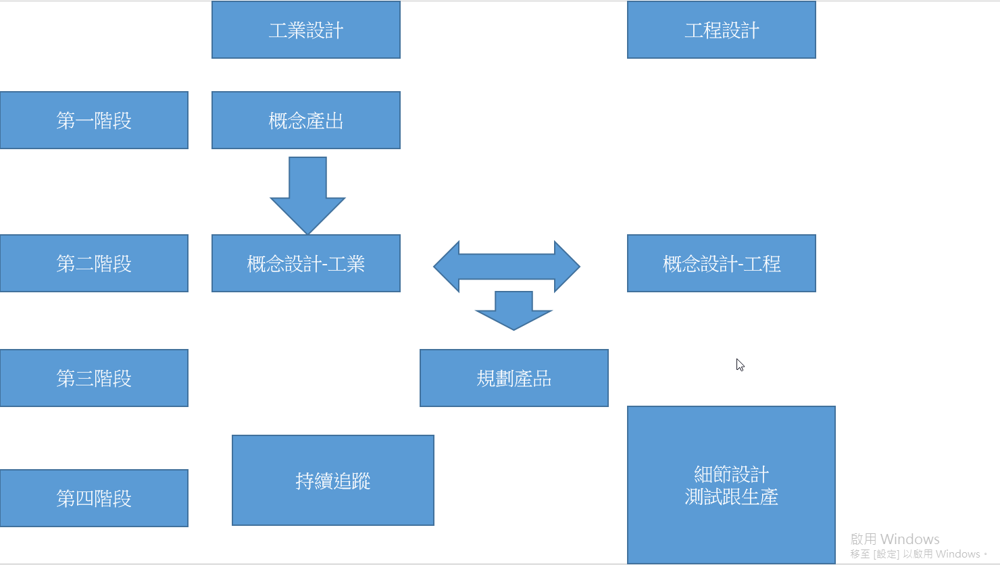

Assignment1 <<
Previous Next >> Assignment3
Assignment2
topic0 p18~p24
以下各節介紹了每種類型的設計過程的詳細特徵以及相關的上下文。
由工業設計師主導概念設計流程

第一階段(Concept Design-I)：工業設計師獨立開發產品的概念，而不受其他部門的干擾。
他們主要關注與美學外觀和用戶體驗有關的方面。 他們很少考慮內部零件，這給了他們很多自由。 他們為外部和高質量渲染圖像生成3D CAD數據以測試該概念。 最終確定外觀形式後，他們會製作一個“設計模型”（一個無功能的原型）來驗證該概念。
最後，在“設計評估會議”上選擇最佳設計。此階段的最終結果是外形的3D CAD數據和設計模型。 工程設計師在此階段不採取任何行動。通常，他們甚至不知道工業設計師在設計什麼。
第二階段(Product Planning)：產品計劃部門決定所選設計的商業化以及目標市場，設計的目標價格和材料成本。 最後，他們準備了產品計劃文件，並為設計的商業化確定了具體的方向。
第三階段(Concept Design-E/Shape Modification)：前一階段的產品規劃文檔以及由工業設計師開發的最終3D CAD數據是提供給工程設計師的初始輸入。工程設計人員檢查其設計概念的可行性。
工程設計人員會製作實驗性原型，以測試是否可以通過工業設計的外觀形式實現所需的性能。
由於工業設計人員在定義外觀形式時並未考慮內部零件，因此在將內部零件佈置時必會遇到麻煩。
因此，Concept Design-E有一個相應的過程：工業設計師的“形狀修改”。工業設計師使用從工程設計師那裡收到的佈局數據來修改外觀形式。此時，兩個目標相互碰撞。
工業設計師嘗試以保留原始形式，而工程設計人員要求進行修改以確保功能和性能。在這個過程中，發生了非常緊密的交互。結果是有關外部形狀和內部零件佈局的3D CAD數據。
第四階段(Detail design testing & production/Follow-up)：從這一階段開始，工程設計師在所有零件中領導該過程。 工程設計人員根據上一階段確定的3D CAD數據來決定各個零件的幾何形狀和成分結構。 由於考慮了批量生產或可靠性測試，他們有時會要求工業設計師對外觀設計進行修改。
完成後為了進行詳細設計，我們製作了稱為“工程樣品”的工作原型，以檢查其形式和功能。 在這一點上，工業設計師要評估其外觀設計符合其設計理念的程度。
然後，工程設計師決定供應商，生產模具，並通過多個事件過程測試“生產前原型”，以提高性能的可靠性和產品的耐用性。
另一方面，在“follow-up”中，工業設計師決定如何在產品上應用顏色，圖形，材料和表面處理，並為工程設計師提供相關規範。 對於所生產的每種工作原型，工業設計師都要根據規格測試美學和情感品質。 當他們批准後，他們在設計過程中的正式角色便結束了。 除非獲得批准，否則工程設計師應再次生產和測試有問題的零件。 我們發現所有六個公司都具有這種機制來維持產品的設計質量。
類型1與傳統觀念相反，傳統觀念認為新產品開發過程是通過市場研究或開發新技術來確定市場需求而開始的。 它始於純粹的工業設計師的完全自由的概念化。 這意味著可以根據工業設計師在腦海中設想的圖片來開發新產品。 這與工程設計準則中描述的產品設計流程不一致（例如，在Dym，1994年； Haik＆Shahin，2010年； Pahl等，2007年）中，工業設計人員在概念設計中的作用缺失了。
考慮到相關的理論，即創造力是在以解決方案為導向的方法（Wynn＆Clarkson，2005）對問題進行徹底分析之前發生的，例如“主要生成器”（Darke，1979）和猜想分析模型（Hillier）。 ，Musgrove和O'Sullivan，1972年）以及Lawson（2006年）和March（1984年）的其他相關發現和論點，這將是公司賦予工業設計者自由和自主權以產生創造性解決方案概念的最佳策略。不受外界干擾。實際上，類型1在兩種情況下使用：一種是在形狀和功能上開發新概念產品，包括開發新產品類別（如在公司A和E中），另一種是盡快推出現有產品的新模型（如在公司C中）。當有大量參考設計時，後一種情況似乎是可能的，因此，工業設計師可以在交貨時間短時決定產品尺寸和外部元素而無需任何產品規格。
2.2類型2：由工業設計師領導的組合內外流程
公司使用此過程來開發新型產品或修改現有產品。 在任何一種情況下，與類型1不同，產品計劃團隊都將啟動該過程。 我們可以分四個階段來解釋類型2，如下圖所示。

第一階段（Product Planning）：產品計劃團隊創建產品計劃文件以啟動產品開發。 它設置了目標市場，目標價格和產品規格。 在開發現有產品的修改版本時，它會根據現有產品（包括競爭對手的產品）做出決定。 在開發新產品時，工程設計師會幫助他們做出決定。 此階段的結果是一個產品計劃文檔。
第二階段（(Concept Design-I):）：收到產品計劃部門的產品計劃文件後，工業設計師將決定產品的外觀和相關內部。 他們收集符合產品尺寸和規格的待開發產品所需的功能項目，並從對用戶或設計趨勢的研究中得出形式概念。 然後，他們安排內部零件以決定外觀形式，同時避免內部零件與預期的外部形式之間發生任何衝突。 因此，它們在外形設計和內部零件的佈置之間來回移動。 在此階段，工業設計師和工程設計師之間幾乎沒有互動。 對於最後的事件，設計評估將使用無功能的設計模型進行，因此，此階段的結果是有關產品外觀和初始內部佈局的3D CAD數據以及設計模型。
第三階段（Concept Design-E/Shape Modification）：從工業設計師那裡收到3D CAD數據後，工程設計師會密切檢查內部零件與外部形狀有關的可行性和可操作性，並製定最終佈局。 工程設計師檢查它們時，經常要求工業設計師修改佈局或外部形式。 因此，工業設計活動要進行相應的過程。 “形狀修改”。但是，形狀更改不如Type1重大，因為他們在上一階段決定了與內部部件有關的外部形狀。 此階段的結果是有關最終外觀形式和內部零件確定佈局的3D CAD數據。
第四階段（Detail design testing & production/Follow-up）：該階段與類型1並無顯著差異。
類型2的顯著特徵是工業設計師積極參與佈置內部功能組件，同時在第二階段確定外觀形狀。偏重工程設計端。
2.3類型3：工程設計師主導的內部優先流程

Type 3與Type 1和Type 2有兩點不同：它們僅用於重新設計現有產品，而工程設計師的活動要先於工業設計師進行。 它要求工程設計師扮演更重要的角色，同時減少工業設計師的角色。 我們解釋它們的特徵如下：
第一階段（Product Planning）：如下圖所示，產品計劃團隊首先根據年度產品開發路線圖啟動產品開發項目。 至此，他們在路線圖中確實具有產品的功能概念。 產品規劃專家根據市場上現有的產品確定目標市場，目標價格，產品尺寸和材料成本。 工程設計師經常通過分析競爭對手產品的技術部分並估算材料成本來幫助他們制定產品規格。 此階段的結果是產品計劃文件，其中包括產品規格。
第二階段（Concept Design-E）：工程設計師根據產品規格快速制定初步佈局。 他們通常使用以前開發的產品的數據。 完成後，他們將初步佈局作為3D CAD數據發送給工業設計師。 這是工業設計過程的起點。 工業設計人員將其用作開發外觀的輸入，而工程設計人員則尋求系統性能的解決方案並繼續完善佈局。 隨著內部佈局和外部形式的同步發展，兩個團隊密切互動並討論分歧或衝突的任何方面，並反復交換反饋以進行修改。 最終，當設計草圖發展為確定的外觀形式時，初步佈局成為確定的佈局。 此階段的結果是確定的佈局，反映了所設計產品的最終尺寸。
2.5階段（Concept Design-I）：此過程遠非一個獨立的後續階段，而是第二和第三階段之間的中間階段。 因此，我們將其稱為第2.5階段。 它從收到工程設計人員的初步佈局開始，並與Concept Design-E同時進行。 工業設計師檢查內部佈局並以匹配的外部形式進行覆蓋。 他們進行構思草圖，3D CAD建模，渲染，設計評估會議以及模擬選擇活動，以決定外觀模板的設計。 工程設計人員不斷對外觀進行建議和評估。 這樣，通過相互關聯的Concept Design-I和Concept Design-E，外觀形式和佈局便逐漸發展。
2.4第4類：工業設計師跟工程設計師協同過程第4類不是官方提議，而是各個設計師在早期階段所做的努力。 在許多情況下，參與開發陣容模型的工程設計師往往會拒絕工業設計提出的新穎設計概念。
為了實現這些概念，工業設計師與自由職業者進行合作。因此，此過程可以繼續處理被拒絕的新穎設計概念。 此外，工業設計師和工程設計人員也進行了協同努力。 與傳統的分離方法不同，它們以集成方式處理設計概念，同時考慮了許多設計變量。 此過程的詳細階段如下）：

第一階段（概念產出）：如上圖所示，工業設計師獨立地構思新設計。 他們大都是根據儘管有創新性但仍未進行項目的設計思想來構建它。
第二階段（概念設計）：此階段始於工業設計師尋找可以與他們合作的工程設計師。 當工程設計師同意加入工業設計師以實施設計概念時，他們將在整個階段中緊密合作。 工程設計師為工業設計師提供了最先進的技術，以增強設計理念。內部佈局的第一級是根據要開發的外部形狀開發的。 該階段的結果是有關外觀和內部佈局的3D CAD數據。
第三階段（規劃產品）：產品計劃團隊通過設計評估會議來決定設計的商業化。 然後，產品計劃團隊定義設計的目標市場。 從這個階段開始，負責開發陣容模型的工程設計人員就參與其中。
第四階段（細節設計，測試跟生產/追蹤）：該階段的過程與類型1、2和3的過程沒有太大不同。
現有的產品開發環境使工程設計人員趨於保守。消費電子領域的大多數開發項目都是緊迫的。公司通常會在計劃中設定產品發布日。因此，設計人員將按照時間軸執行所有任務和事件。根據訪談數據，參與此類項目的工程設計師傾向於拒絕工業設計師提出的新穎設計概念，因為他們認為他們無法確保其概念的工作能夠在選定的時間內通過性能和可靠性測試 。測試失敗將直接影響公司的產品開發路線圖以及工程設計師評估時的年度績效。
這似乎使他們保守地選擇和評估設計概念。因此，對於直接參與按時間順序進入市場的項目的設計師來說，此過程幾乎不可用。相反，例如，從時間表到市場相對寬鬆的工程師設計人員，那些參與為未來產品開發先進技術的人員，將對新穎的設計理念更加開放。此外，更重要的是，似乎更願意與其他專家合作進行設計的設計師傾向於執行此過程。
對於D公司，採用這種工藝的新產品在Type 4方面取得了巨大的市場成功。 但是，在我們的採訪中沒有報告更多將這一過程積極應用於後續項目的案例。 儘管如此，有趣的是D公司還是從先進技術開發團隊派遣了幾名工程設計師到工業設計團隊的相鄰辦公室。 這啟用了協同處理案例。 高層管理人員故意讓他們動手，以使他們立即為工業設計師提供必要的技術支持，以防止工業設計師提出不切實際的設計概念。 這似乎激發了雙方更加親密，從而營造了合作的氣氛。 這將增加新興的集成設計流程的可能性。
Assignment1 <<
Previous Next >> Assignment3